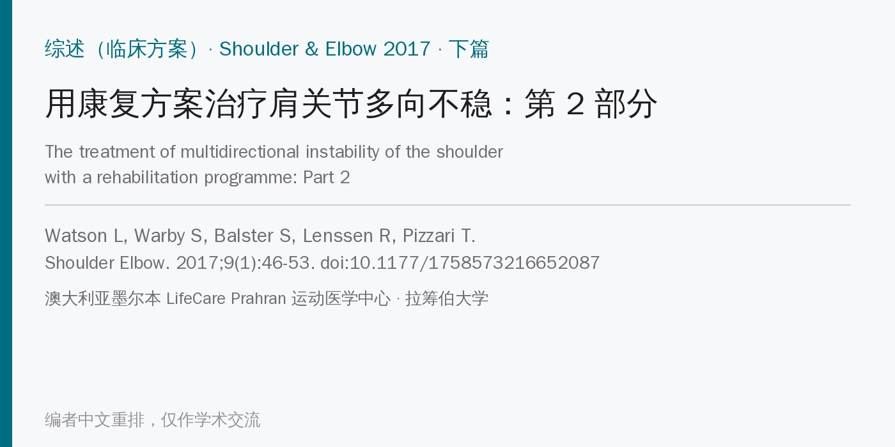
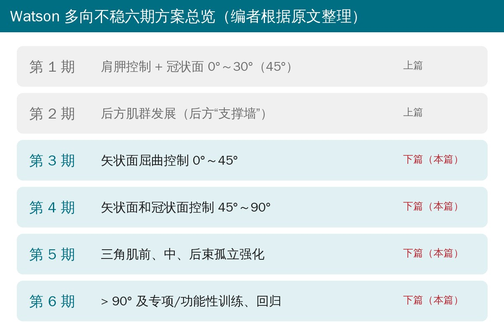
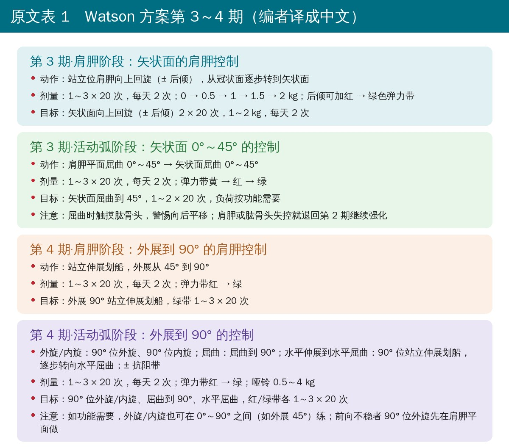
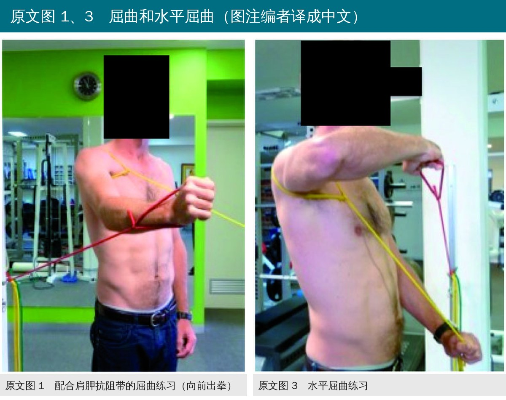
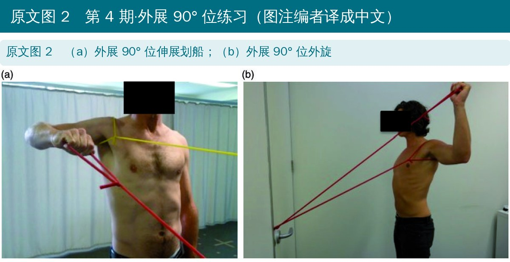
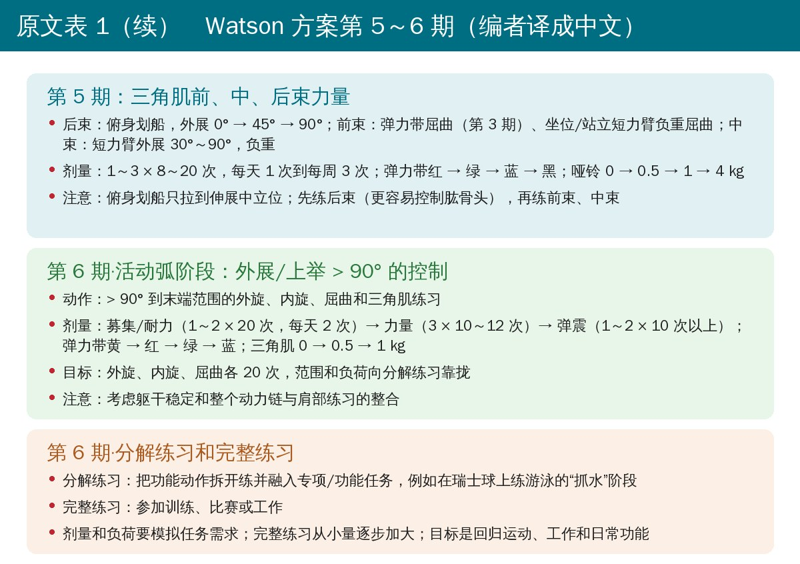
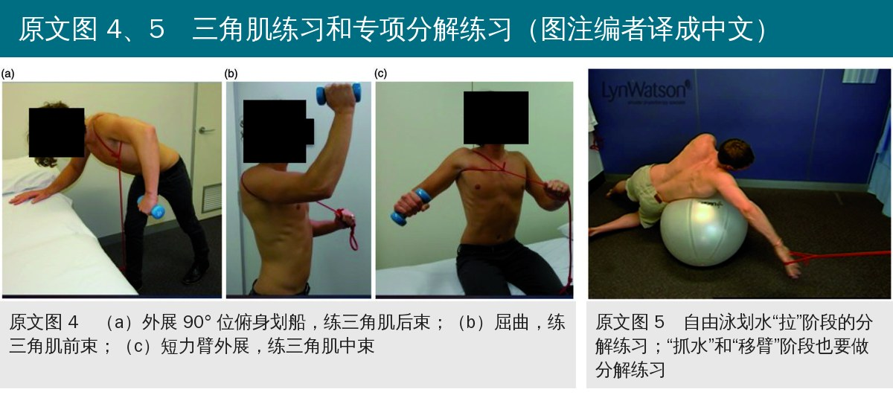
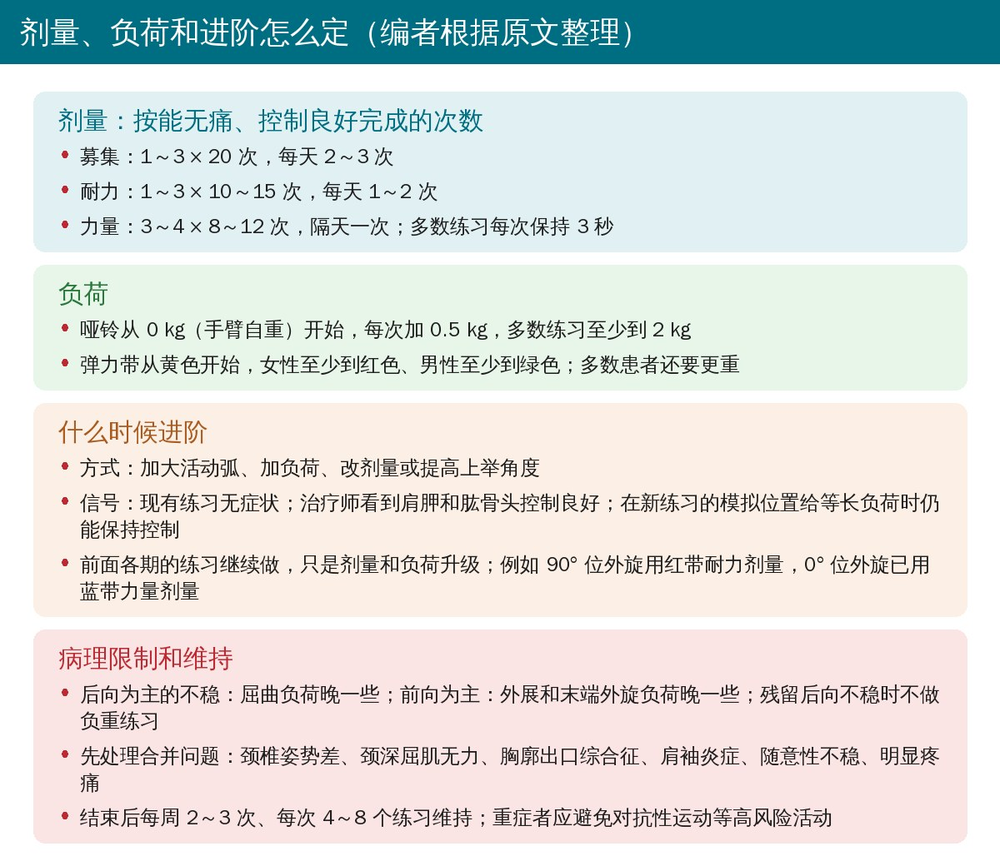
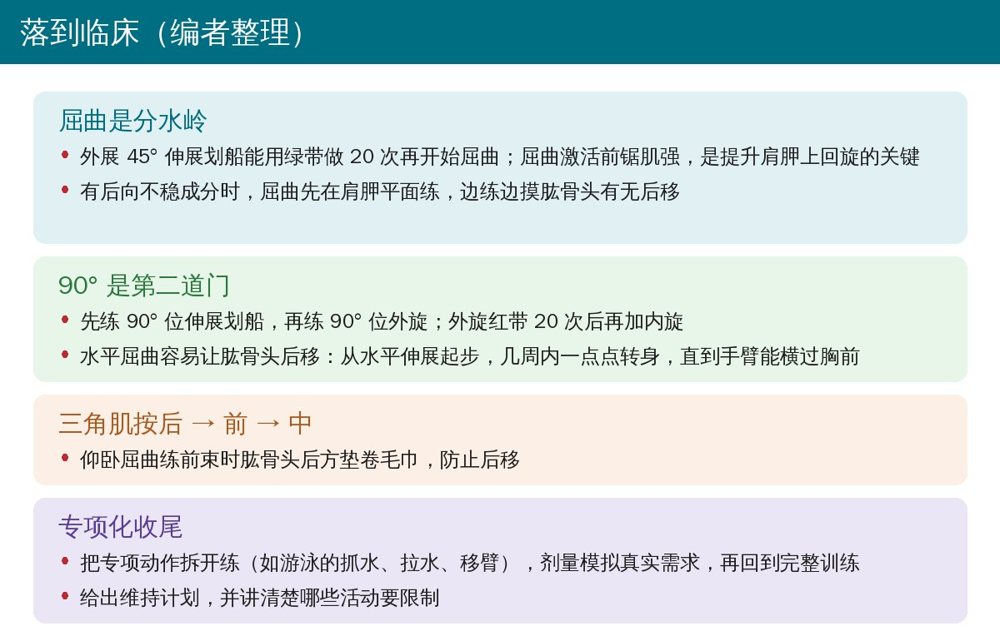

🔖原文信息（编者中文重排）
本文是下篇：讲 Watson 多向不稳康复方案的第 3～6 期，以及剂量、负荷、进阶规则和病理限制。评估方法（矫正效果）和第 1、2 期（肩胛设定、低角度控制、后方肌群）见本号推送的上篇。
📚 文献信息
▪ Watson L, Warby S, Balster S, Lenssen R, Pizzari T. The treatment of multidirectional instability of the shoulder with a rehabilitation programme: Part 2. Shoulder Elbow. 2017;9(1):46-53. doi:10.1177/1758573216652087（2016 年 7 月在线发表）
▪ 中文题目：用康复方案治疗肩关节多向不稳：第 2 部分
▪ 作者来自澳大利亚墨尔本 LifeCare Prahran 运动医学中心和拉筹伯大学
▪ 文章类型：综述（临床方案介绍），方案的随机对照试验注册号 ACTRN12613001240730
• 多向不稳（MDI）最常推荐的初始治疗是康复训练，但已发表的方案很少交代练习参数
• 上篇介绍了如何评估错误的肩胛和肱骨头力学、重建肩胛控制（尤其是向上回旋），以及在低上举角度控制盂肱关节
• 本文目的：介绍第 3～6 期，重点是在肩胛和肱骨头受控的前提下，把练习推进到功能所需的活动范围；作者强调，上篇的前两期必须先完成

🔖编者根据原文整理
• 临床方案介绍：给出第 3～6 期的目标、练习、剂量/负荷、达标目标和注意事项（原文表 1），详细流程图见原文在线补充材料
• 肩胛控制常借助肩胛抗阻带：绕在肩胛上的 TheraBand，可按需要抵抗向上回旋、上提或后倾
• 开始条件：外展 45° 站立伸展划船（拉到中立位）能对抗绿色弹力带做 20 次
• 为什么要练屈曲：屈曲是非常功能性的动作，前锯肌激活高，是提升前锯肌力量、从而改善肩胛上回旋的关键
• 注意后向不稳：后方“支撑墙”和控制没建好时，屈曲会增加肱骨头平移；后向不稳成分大的患者先在肩胛平面屈曲，再逐步转到矢状面
• 肩胛阶段：第 1 期的肩胛设定从冠状面逐步转到矢状面，负荷可能要从手臂自重重新开始，每次加 0.5 kg
• 活动弧阶段：弹力带固定在身后做“向前出拳”；先用黄色或红色弹力带做小弧，绿色能完成后再扩大；从屈曲 20°～30° 开始，逐步到 45°
• 肩胛阶段：伸展划船从外展 45° 推进到 90°，弹力带红 → 绿，功能需要时可用蓝、黑色
• 90° 位外旋/内旋：90° 位伸展划船为外旋做准备；明显前向不稳者先缩小外旋弧或在肩胛平面做；能用红带完成 90° 位外旋 20 次后再练内旋
• 90° 屈曲：负荷按患者功能和运动需求定
• 水平伸展到水平屈曲：水平屈曲会让肱骨头大幅后移，但脱紧身上衣、开车、网球反手都离不开它。从 90° 位站立伸展划船出发，几周内让患者逐步朝患侧转身，起始位越来越偏向水平屈曲，直到手臂横过胸前；每个角度都慢慢加弹力带阻力，直到满足功能需求

🔖原文表 1 第 3～4 期（编者译成中文）

🔖原文图 1、图 3（图注编者译成中文）

🔖原文图 2（图注编者译成中文）
• 目的：在保持肩胛和肱骨头控制的同时，强化三角肌前、中、后束；三角肌有助于肱骨头居中和正常肩部运动学；部分患者可与前几期同时开始
• 后束：第 2 期的俯身划船先在外展 0° 加负荷，同时逐步把俯身划船推进到外展 90°
• 前束：按患者情况在仰卧、坐位或站立做屈曲；仰卧练习控制不好会让肱骨头后移，可在肱骨后方垫卷毛巾
• 中束：先短力臂、小范围外展，再推进到患者需要的范围
• 活动弧阶段：在模仿具体动作（如网球发球）前，常要先在外展 120° 到末端范围做内旋、外旋、三角肌和屈曲练习，弹力带放在不同位置，强调末端的上回旋控制；还要考虑动力链的整合
• 分解练习：把动作拆成几段练，例如自由泳的抓水、拉水和移臂；剂量要贴近实际需求，电脑工作者用低负荷高次数，偶尔要把重物举过头顶的人用高负荷低次数；可按需要强调向心、离心或弹震（增强式）动作
• 负重练习从扶墙进阶到完全负重，但只要还有后向不稳成分就不做负重练习
• 完整练习：分解动作控制好后，再练完整动作，逐步回到训练和工作，量逐步增加
• 维持计划：完成方案后每周 2～3 次、每次 4～8 个练习，常用一天哑铃、一天弹力带；较重的 MDI 患者要严格限制部分活动，例如不建议回归对抗性运动，限制部分健身动作、重量和练习量

🔖原文表 1 第 5～6 期（编者译成中文）

🔖原文图 4、图 5（图注编者译成中文）

🔖编者根据原文整理
• 剂量：按能无痛、肩胛控制良好完成的次数定；先用募集剂量（1～3 × 20 次，每天 2～3 次），再到耐力剂量（1～3 × 10～15 次，每天 1～2 次），后期用力量剂量（3～4 × 8～12 次，隔天一次）；多数练习每次保持 3 秒
• 负荷：哑铃从 0 kg 开始、每次加 0.5 kg，多数练习至少到 2 kg；弹力带从黄色开始，女性至少到红色、男性至少到绿色，多数患者还要更重
• 进阶信号：现有练习无症状；治疗师看到肩胛和肱骨头控制良好；在拟进阶练习的模拟位置给等长负荷，患者仍能保持控制
• 按主要不稳方向调整：后向为主的晚一些加屈曲负荷，前向为主的晚一些加外展和末端外旋负荷
• 常见合并问题要先处理：颈椎姿势差、颈深屈肌无力、有症状的胸廓出口综合征、肩袖炎症、随意性不稳和明显疼痛
• 第 3～6 期完成了六期 Watson 方案：先建立肩胛和肱骨头控制，再进入活动范围，最后以功能性和专项训练收尾
• 方案给治疗师提供了一个灵活的模型，可以根据评估和每位患者的情况个体化实施
• 原文本身没有疗效数据：发表时支持方案的只有作者的会议报告和博士论文
• 后续证据：据 PubMed 检索，同一团队随后发表的 41 名 MDI 患者随机对照试验中，12 次 Watson 方案在第 12 周的 WOSI、第 24 周的 WOSI、MISS 和疼痛均优于 Rockwood 方案（Warby 等，Am J Sports Med 2018，doi:10.1177/0363546517734508）；43 人的单组研究显示 12 周后功能评分、肌力和外展 0°～60° 的肩胛上回旋均改善（Watson 等，J Shoulder Elbow Surg 2018，doi:10.1016/j.jse.2017.07.002）。两项研究都由方案开发者完成，样本也不大
• 剂量和进阶多为经验：只有力量剂量引用了 ACSM 抗阻训练立场声明，各期的弹力带颜色、kg 数和进阶标准没有试验依据，而且颜色只对应 TheraBand，换其他品牌阻力并不相同
• 利益冲突：第一作者讲授肩关节课程 25 年以上，方案是课程内容；其余作者兼职协助她的课程
• 实用价值高：把“什么时候进阶、怎么进阶、什么情况要退回”写得很具体，并按主要不稳方向给出调整，适合门诊直接参考
• 表 1 的角度写错：第 3 期“矢状面屈曲 0° 到 4° 上举”，按标题和正文应为 0°～45°
• 募集剂量的频次两篇不一致：本篇参数部分写“每天 2～3 次”，上篇表 1 第 1 期写“每天 2 次”，上篇正文又写“每天 1～2 次”
• 力量剂量前后不一：参数部分写“3～4 组 × 8～12 次，隔天一次”，表 1 第 6 期写“3 × 10～12 次”，第 5 期写“1～3 × 8～20 次，每天 1 次到每周 3 次”
• 引用与内容不符：“肩胛抗阻带可抵抗向上回旋、上提和后倾”引的第 6 条，是一篇讲“训练肩胛下肌新方法”的会议报告；第 6 期“考虑动力链整合”引的第 10 条，是女子手球运动员核心训练提高投掷速度的研究，与肩关节不稳无直接关系
• 图注没有区分图 1 和图 3 的分图：两张照片共用一行图注“图 1 屈曲练习，图 3 水平屈曲练习”，读者只能按位置推断左为图 1、右为图 3

🔖编者整理
• 进阶看控制，不看时间：无症状、肩胛和肱骨头控制好、模拟位置等长负荷能扛住，三条都满足再往下一期走
• 屈曲和水平屈曲最考验后方稳定：练时摸肱骨头，有后移就退回第 2 期加强后方肌群
• 按主要不稳方向排顺序：后向不稳晚加屈曲，前向不稳晚加外展和末端外旋，残留后向不稳不做负重
• 专项化收尾、给维持计划：分解练习的剂量贴近真实需求，结束后每周 2～3 次维持，并讲清楚要避免的活动
表 1 Watson MDI 方案概览：第 3～6 期
| 分期 | 目标 | 可选练习 | 剂量/负荷 | 达标目标 | 注意事项 |
|---|---|---|---|---|---|
| 第 3 期 肩胛阶段 | 矢状面的肩胛控制 | 站立位肩胛向上回旋 ± 后倾，从冠状面逐步转到矢状面 | 1～3 × 20 次，每天 2 次；0 → 0.5 → 1 → 1.5 → 2 kg；后倾 ± 红～绿色弹力带 | 矢状面向上回旋 ± 后倾 2 × 20 次，1～2 kg，每天 2 次 | |
| 第 3 期 活动弧阶段 | 矢状面活动弧控制 | 肩胛平面屈曲 0°～45°；矢状面屈曲 0°～4°（原文如此，应为 45°） | 1～3 × 20 次，每天 2 次*；黄 → 红 → 绿色弹力带* | 矢状面屈曲到 45° 1～2 × 20 次，负荷适合功能需要* | 屈曲时触摸肱骨头，评估有无向后平移；肩胛或肱骨头失控则退回第 2 期加强 |
| 第 4 期 肩胛阶段 | 外展 90° 内的肩胛控制 | 站立伸展划船，外展 45° → 90° | 1～3 × 20 次，每天 2 次*；红 → 绿色弹力带* | 外展 90° 站立伸展划船，绿带 1～3 × 20 次 | |
| 第 4 期 活动弧阶段 | 外展 90° 内的活动弧控制 | 外旋/内旋：90° 位外旋、90° 位内旋 屈曲：屈曲到 90° 水平伸展到水平屈曲：90° 位站立伸展划船，逐步转到水平屈曲 ± 抗阻带 | 1～3 × 20 次，每天 2 次*；红 → 绿色弹力带*；哑铃 0.5～4 kg* | 90° 位外旋/内旋、屈曲到 90°、水平屈曲，红/绿带各 1～3 × 20 次* | 如功能需要，外旋/内旋可在 0°～90° 之间（如外展 45°）做；有前向不稳者，90° 位外旋先在肩胛平面做 |
| 第 5 期 | 三角肌后、中、前束力量 | 后束：俯身划船，外展 0° → 45° → 90° 前束：弹力带屈曲（第 3 期）、坐位/站立短力臂负重屈曲 中束：短力臂外展 30°～90°，负重 | 1～3 × 8～20 次，每天 1 次到每周 3 次*；红 → 绿 → 蓝 → 黑色弹力带*；0 → 0.5 → 1 → 4 kg* | 俯身划船拉到伸展中立位；先练后束（更容易控制肱骨头），再练前束和中束 | |
| 第 6 期 活动弧阶段 | 外展/上举 > 90° 的活动弧控制 | > 90° 到末端范围的外旋*、内旋*、屈曲*、三角肌练习* | 募集/耐力（1～2 × 20 次，每天 2 次）→ 力量（3 × 10～12 次）→ 弹震（1～2 × 10 次以上）*；黄 → 红 → 绿 → 蓝色弹力带*；三角肌 0 → 0.5 → 1 kg* | 外旋/内旋/屈曲 20 次，范围和负荷向分解练习靠拢 | 考虑躯干稳定和整个动力链与肩部练习的整合 |
| 第 6 期 分解练习和完整练习 | 分解练习功能动作并融入专项/功能任务 | 分解练习（示例）：在瑞士球上练游泳的抓水阶段 完整练习：参加训练、比赛或工作 | 分解练习的剂量和负荷要模拟任务需求；完整练习从小量逐步加大 | 回归运动、工作和日常功能 |
注：各练习每次保持 3～5 秒。* 剂量和负荷可从募集、耐力剂量逐步进阶到患者功能所需的剂量和负荷；如功能需要，可进阶到蓝色、黑色弹力带或更重的哑铃。
欢迎关注骨科康复小黄公众号，获取更多物理治疗的专业知识！上篇：评估和第 1～2 期。
📄参考文献：
Watson L, Warby S, Balster S, Lenssen R, Pizzari T. The treatment of multidirectional instability of the shoulder with a rehabilitation programme: Part 2. Shoulder Elbow. 2017;9(1):46-53. doi:10.1177/1758573216652087
Watson L, Warby S, Balster S, Lenssen R, Pizzari T. The treatment of multidirectional instability of the shoulder with a rehabilitation program: Part 1. Shoulder Elbow. 2016;8(4):271-278. doi:10.1177/1758573216652086
Warby SA, Ford JJ, Hahne AJ, et al. Comparison of 2 exercise rehabilitation programs for multidirectional instability of the glenohumeral joint: a randomized controlled trial. Am J Sports Med. 2018;46(1):87-97. doi:10.1177/0363546517734508
Watson L, Balster S, Lenssen R, Hoy G, Pizzari T. The effects of a conservative rehabilitation program for multidirectional instability of the shoulder. J Shoulder Elbow Surg. 2018;27(1):104-111. doi:10.1016/j.jse.2017.07.002
本文为中文解读，仅作学术交流：照片引自原文图 1～图 5（照片中只有分图字母和墙上的机构标志，无英文说明需要覆盖；受试者面部遮挡为原文所加），图注由编者译成中文，表 1 中文卡、六期总览、剂量进阶卡和临床卡为编者根据原文整理，表格为编者翻译。原文版权归原作者和 Shoulder & Elbow 所有。